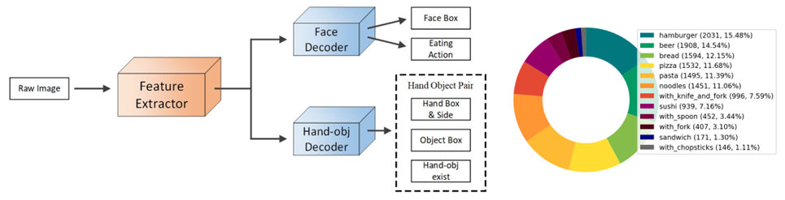

Research Interests
- Machine Learning, Deep Learning
- Computer Vision: Object Detection, Image Segmentation, Visual Question Answering, Video Action Recognition
- AIGC: Text-to-Image Generation, Multi-layer Image Generation, Image Editing

Ph.D. at The University of Electro-Communications · Tokyo, Japan
Hello, I am Junwen Chen, from Sichuan, China. I am currently pursuing my Ph.D. at The University of Electro-Communications and belong to the Yanai Lab. My research mainly focuses on Human-Object Interaction Detection and AIGC.
üåç Visitor Map

I mainly conduct research on deep learning in the field of computer vision, focusing on improving the accuracy and generalization of Human-Object Interaction (HOI) detection methods from my master's to doctoral studies. Recently, I have been exploring the integration of Multimodal Large Language Models (MLLMs) and AI-Generated Content (AIGC) into my research topics.
Winter 2026 research internship / Full-time R&D engineer / Full-time research scientist
Major: Informatics
Research Theme: Improving the Efficiency and Generality of Human-Object Interaction Detection Methods
Major Achievement:
1. Chen, Junwen, Peilin Xiong, and Keiji Yanai. "HOI-R1: Exploring the Potential of Multimodal Large Language Models for Human-Object Interaction Detection." arXiv preprint arXiv:2510.05609 (2025). [PDF] [Code] Research CardMajor: Informatics
Degree: Master of Informatics
Research Theme: Improvement of Human-Object Interaction Detection Methods and Their Application to Dietary Analysis
Major Achievement:
1. Chen, Junwen, and Keiji Yanai. "QAHOI: Query-based anchors for human-object interaction detection." 2023 18th International Conference on Machine Vision and Applications (MVA). IEEE, 2023. [PDF] [Code] Research CardMajor: Automation
Degree: Bachelor of Electrical and Control Engineering
Research Theme: Intelligent Driving Scene Segmentation with Deep Detection Model and Graph Convolutional Network
Major Achievement:
1. Chen, J., Lu, Y., Chen, Y., Zhao, D., & Pang, Z. (2020, November). Contourrend: a segmentation method for improving contours by rendering. In International Symposium on Neural Networks (pp. 251-260). Cham: Springer International Publishing. [PDF] [Code] Research CardMajor Achievement:
1. Chen, J., Jiang, H., Wang, Y., Wu, K., Li, J., Zhang, C., ... & Yuan, Y. (2025). PrismLayers: Open Data for High-Quality Multi-Layer Transparent Image Generative Models. arXiv preprint arXiv:2505.22523. [PDF] [Datasets] Research CardMajor Achievement:
1. Chen, J., Lu, Y., Chen, Y., Zhao, D., & Pang, Z. (2020, November). Contourrend: a segmentation method for improving contours by rendering. In International Symposium on Neural Networks (pp. 251-260). Cham: Springer International Publishing. [PDF] [Code] Research CardThis award has been given since 2011 to the authors of an paper that was most excellent from the viewpoint of machine vision applications.
[Official Site]Presentation Title: 画像認識技術を活用した冷蔵庫内食材自動判別システムの開発
As the Teaching Assistant, I supported the student on this project.
[Award Info] [Official Site] [Paper]arXiv preprint arXiv:2510.05609
Authors: Junwen Chen, Peilin Xiong, Keiji Yanai
Proceedings of the IEEE/CVF International Conference on Computer Vision (ICCV 2025)
Authors: Keming Wu, Junwen Chen, Zhanhao Liang, Yinuo Wang, Ji Li, Chao Zhang, Bin Wang, Yuhui Yuan

International Conference on Document Analysis and Recognition (ICDAR 2025)
Authors: Honghui Yuan, Junwen Chen, and Keiji Yanai
The 36th British Machine Vision Conference (BMVC 2025)
Authors: Peilin Xiong, Junwen Chen, and Keiji Yanai
The Thirty-Ninth Annual Conference on Neural Information Processing Systems (NeurIPS 2025)
Authors: Yuxuan Luo, Yuhui Yuan, Junwen Chen, Haonan Cai, Ziyi Yue, Yuwei Yang, Fatima Zohra Daha, Ji Li, Zhouhui Lian
arXiv preprint arXiv:2505.22523
Authors: Junwen Chen, Heyang Jiang, Yanbin Wang, Keming Wu, Ji Li, Chao Zhang, Keiji Yanai, Dong Chen, Yuhui Yuan
2025 IEEE/CVF Winter Conference on Applications of Computer Vision (WACV 2025)
Authors: Junwen Chen, Yingcheng Wang, Keiji Yanai
Proceedings of the 2nd International Workshop on Multimedia Content Generation and Evaluation: New Methods and Practice (McGE '24)
Authors: Jing Yang, Junwen Chen, Keiji Yanai
Proceedings of the 5th ACM Workshop on Intelligent Cross-Data Analysis and Retrieval
Authors: Jing Yang, Junwen Chen, Keiji Yanai
Proceedings of the 5th ACM International Conference on Multimedia in Asia (MMAsia '23)
Authors: Jingbin Xu, Junwen Chen, Keiji Yanai
Proceedings of the 8th International Workshop on Multimedia Assisted Dietary Management (MADiMa '23)
Authors: Yingcheng Wang, Junwen Chen, Keiji Yanai
2023 18th International Conference on Machine Vision and Applications (MVA)
Authors: Junwen Chen and Keiji Yanai
International Conference on Multimedia Modeling
Authors: Jing Yang, Junwen Chen, Keiji Yanai
Proceedings of the 4th ACM International Conference on Multimedia in Asia (MMAsia '22)
Authors: Junwen Chen, Keiji Yanai
International Symposium on Neural Networks
Authors: Junwen Chen, Yi Lu, Yaran Chen, Dongbin Zhao, Zhonghua Pang


A mobile application written in Kotlin designed to help users learn Japanese words through interactive quizzes and flashcards.

A website providing information about ski resorts in Japan, including location, facilities, and user reviews.

This is an easy to use and deployable local AI assistant on your Windows PC, integrating Qwen3-ASR for speech recognition, Ollama Qwen3-30B-A3B-Instruct-2507 for LLM, Qwen3-TTS or Kokoro for text-to-speech synthesis, and MCP for device control.
Tennis, Photography, Traveling